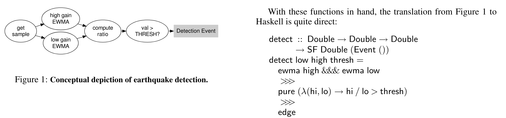
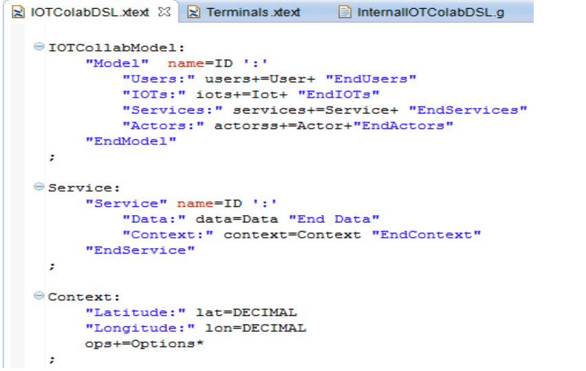
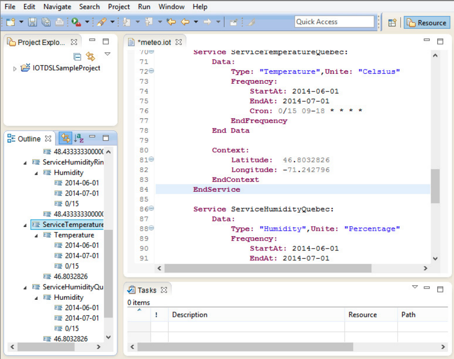
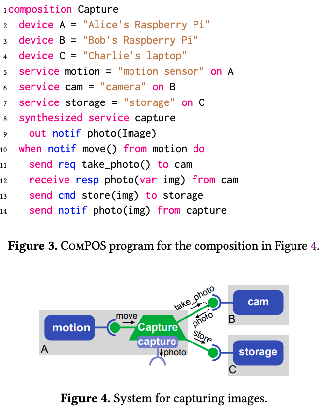

vorto
1
2
3
4
5
6
7
8
9
10
11
12
13
14
15
16
17
18
19
20
21
22
23
24
25
26
27
28
29
30
31
32
|
InformationModel:
'vortolang' 1.0
'namespace' qualifiedName
'version' version
('displayname' string)?
('description' string)?
('category' ID('/' ID)*)?
(modelReference)*
'infomodel' ID '{'
'functionblocks' '{'
(functionblockProperty)*
'}'
;
functionblockProperty:
('mandatory' | 'optional')? ('multiple')? ID 'as' [FunctionBlock::ID | qualifiedName] (description)?
qualifiedName: ID ('.' ID)*;
version : int('.' int)*('-'ID)?;
ID:
'^'?('a'..'z'|'A'..'Z'|'_') ('a'..'z'|'A'..'Z'|'_'|'0'..'9')*
;
description: STRING
modelReference:
'using' qualifiedName ';' version;
|
1
2
3
4
5
6
7
8
9
10
11
12
13
14
15
16
17
|
vortolang 1.0
namespace com.mycompany
version 1.0.0
description "Information model for FabLab.eu's IoT Octopus"
category multisensor
using com.ipso.smartobjects.Accelerometer ; 1.1.0
using com.ipso.smartobjects.Barometer ; 1.1.0
infomodel IoTOctopus {
functionblocks {
mandatory accelerometer as Accelerometer "some description"
optional barometer as Barometer
}
}
|
1
2
3
4
5
6
7
8
9
10
11
12
13
14
15
16
17
18
19
20
21
22
23
24
25
26
27
28
29
30
31
32
33
34
35
36
37
38
39
40
41
42
43
44
45
46
47
48
49
50
51
52
|
FunctionBlock:
'vortolang' 1.0
'namespace' qualifiedName
'version' version
('displayname' string)?
('description' string)?
('category' ID('/' ID)*)?
(modelReference)*
'functionblock' ID ('extends' [Functionblock::ID | qualifiedName])? '{'
('configuration' '{'
(Property)*
'}')?
('status' '{'
(Property)*
'}')?
('events' '{'
(ID '{'
(Property)*
'}')*
'}')?
('operations' '{'
(Operation)*
'}')?
'}'
;
qualifiedName: ID ('.' ID)*;
version : int('.' int)*('-'ID)?;
ID: '^'?('a'..'z'|'A'..'Z'|'_') ('a'..'z'|'A'..'Z'|'_'|'0'..'9')*;
modelReference: 'using' qualifiedName ';' version;
description: STRING
Property: Please refer to chapter Model Property for details
Operation:
('extension')? ('mandatory' | 'optional')? ('breakable')? ID '(' (OperationType (',' OperationType)*)?')' ('returns' OperationType)? (description)?;
OperationType: DictonaryOperationType | OperationPrimitiveType | OperationObjectType;
DictonaryOperationType:
('multiple')? ID 'as' DictionaryType ('<' ConstraintRule '>')? (description)?;
OperationPrimitiveType: ('multiple')? ID 'as' PrimitiveType ('<' ConstraintRule '>')? (description)?;
OperationObjectType: ('multiple')? ID 'as' ObjectType (description)?;
|
1
2
3
4
5
6
7
8
9
10
11
12
13
14
15
16
17
18
19
20
21
|
vortolang 1.0
namespace com.mycompany
version 1.0.0
functionblock Accelerometer {
configuration {
mandatory enable as boolean
}
status {
mandatory xValue as float "The measured value along the X axis."
optional yValue as float "The measured value along the Y axis."
optional zValue as float "The measured value along the Z axis."
}
operations {
reset() returns boolean "resets the accelerometer"
}
}
|
Flask

Flask: Staged Functional Programming for Sensor Networks
Mainland G, Morrisett G, Welsh M. Flask: Staged Functional Programming for Sensor Networks[J]. 2008.
IOTCollab


Adda M, Saad R. A data sharing strategy and a DSL for service discovery, selection and consumption for the IoT[J]. Procedia Computer Science, 2014, 37: 92-100.
ComPOS

Rules

Alfred Åkesson, Görel Hedin, and Niklas Fors. 2023. ComPOS: A DSL for Composing IoT Systems with Weak Connectivity. In Proceedings of the 10th ACM SIGPLAN International Workshop on Reactive and Event-Based Languages and Systems (REBLS 2023). Association for Computing Machinery, New York, NY, USA, 31–42. https://doi.org/10.1145/3623506.3623577